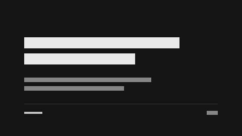

cover-numbered
a hairline deitada na base do palco, sob a última linha de todo slide que fecha um trecho
terceira pessoa, verbo no passado, um número por frase
high
este é o exemplo canônico da skill, e é a capa e a assinatura DELE que todo outro deck é obrigado a deixar para trás: a capa numerada, e a hairline deitada na base do palco
a medida de que o slide fala — a barra, o ponto e a linha de cada série, e o trecho que a figura marca
o resto da série, que está ali só para dar escala à medida marcada, e a área sob a linha
pull-quote
comparison
three-columns
Nada aqui foi medido
examples/canonical.deck.html — o Estaleiro é invenção deste exemplo, e todo número dele com ele
2026-09
9
Nove equipes entregam pelo Estaleiro
O painel do Estaleiro, aqui como captura sintética · a imagem entra por caminho e viaja embutida na própria página

Entregar deixou de ser a parte imprevisível da semana de qualquer equipe.
O Estaleiro devolveu um dia por semana a cada equipe
Tudo o que vem depois deste slide é a conta desse dia.
02
O que os números dizem
Cinco equipes cortaram a espera pela metade
horas entre o merge e a produção, mediana
S1
Cartografia
3
Correnteza
5
Bússola
4
Âncora
9
Farol
2
O reprocesso caiu de doze para três por mês
entregas refeitas no mês
S1
Jan
12
Mar
9
Mai
7
Jul
6
Set
4
Nov
3
31%
do tempo de uma entrega era espera por ambiente
S1
A fila por ambiente encolheu em todo trimestre
pedidos na fila, média do trimestre
S1
1º tri
48
2º tri
31
3º tri
19
4º tri
8
O acumulado passou de mil entregas em outubro
entregas acumuladas no ano
S1
Fev
90
Abr
260
Jun
470
Ago
730
Out
1020
Dez
1310
O ano fechou melhor em três frentes
S1
9
equipes
1310
entregas
3,4×
frequência
A espera caiu em dez meses seguidos
minutos de espera por ambiente, mediana
S1
Mar
74
Abr
66
Mai
61
Jun
52
Jul
45
Ago
38
Set
30
Out
24
Nov
19
Dez
15
Quatro equipes mediram o mesmo ganho, cada uma do seu jeito
S1
| Equipe | Antes | Depois |
|---|---|---|
| Cartografia | 9 h | 3 h |
| Correnteza | 14 h | 5 h |
| Âncora | 21 h | 9 h |
| Farol | 6 h | 2 h |
03
O que vem depois
Metade do próximo ano vai para o que já existe
100% são o esforço planejado para 2027
S1
Manutenção
50
Novas equipes
30
Plataforma
20
O caminho de uma entrega cabe em quatro paradas
O trajeto que o Estaleiro automatizou, e o trecho de espera que ele cortou
O Estaleiro chega à casa inteira até setembro
Piloto
Fev/26
Cinco equipes
Jun/26
Nove equipes
Dez/26
Toda a casa
Set/27
Um dia por semana, devolvido a nove equipes, é a conta deste ano.
Aprovem as quatro contratações que levam o Estaleiro à casa inteira.